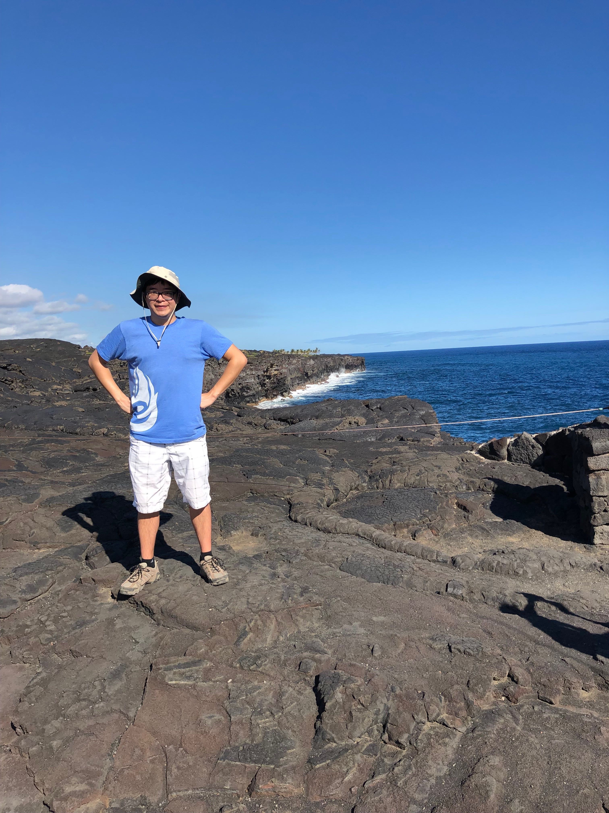

About Me

I have a degree in Chemistry/Materials Science from UCLA with a deep love of learning and helping others with my knowledge.
I like to create tools and applications to help people with whatever they need help with. I’m a jack-of-all-trades and I jump at opportunities to learn new things. I believe that having knowledge in a diverse number of fields leads to well-rounded products that anyone can use.
I have experience with front end web development tech like HTML, CSS, and JavaScript, as well as back end technlogies like MongoDB, Express, and Node. I’m detail-oriented and I strive to collaborate with others to make clean and intuitive applications.